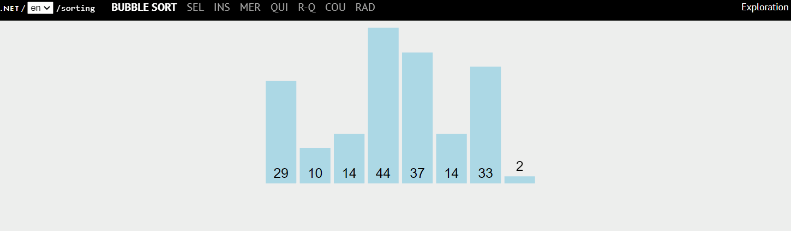
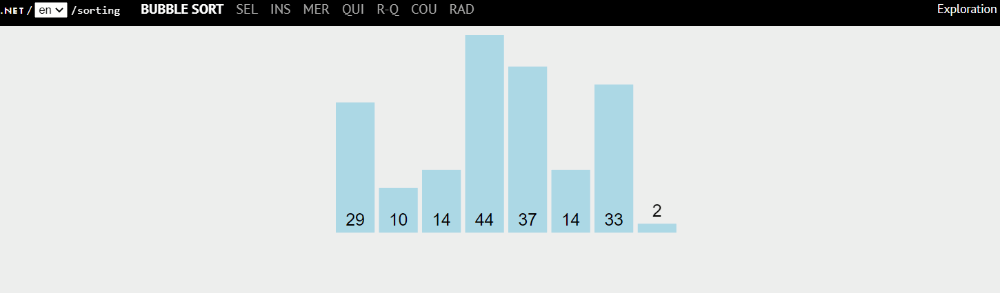

泡沫～
概念
兩兩做比較，如果右邊比左邊大就換位置，最後在最右邊的數字就是「最大值」。
因為很像泡泡一樣往上飄，故得到「泡沫排序法」這個名稱。
流程圖：

步驟
1 | let swapped = null |
1 | 令 swapped = null（一個 flag，判斷是否排序完畢） |
實作
1 | function bubbleSort(arr) { |
泡沫～
兩兩做比較，如果右邊比左邊大就換位置，最後在最右邊的數字就是「最大值」。
因為很像泡泡一樣往上飄，故得到「泡沫排序法」這個名稱。
流程圖：

1 | let swapped = null |
1 | 令 swapped = null（一個 flag，判斷是否排序完畢） |
1 | function bubbleSort(arr) { |
Update your browser to view this website correctly. Update my browser now